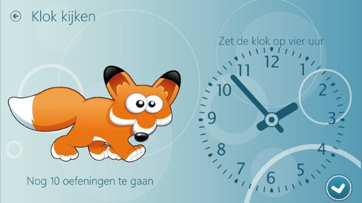

<article class="main-content">

    <div class="wrapper clearfix">

        <section class="page-content clearfix">

            <header class="section-header">
                <h3 class="section-title">Over mij</h3>
                <span class="section-subtitle">In 195 karakters</a></span>
            </header>

            <p>Het ontwikkelen van de juiste oplossingen door IT Architectuur, Agile en Continuous delivery te combineren is mijn passie. Ik doe dat het liefst in nauwe samenwerking met de klant in teamverband.</p>

        </section>

        <section class="page-content clearfix">

            <header class="section-header">
                <h3 class="section-title">Mijn expertise</h3>
                <span class="section-subtitle">Hoe kan ik helpen?</a></span>
            </header>

            <div class="one-half first">

                <h4>Oplossingen door Software Ontwikkeling</h4>
                <p>Met meer dan 20 jaar ervaring in software ontwikkeling ben ik in staat om samen met u een oplossing te ontwikkelen. In de rol als agile ontwikkelaar, team leider of meewerkend voorman.</p>

                <h4>Agile</h4>
                <p>Als gecertificeerd SCRUM Master met meerdere jaren ervaring in diverse SCRUM implementaties en agile teams ben ik instaat om u te helpen om uw SCRUM team effectiever te maken.</p>

                <h4>Architectuur</h4>
                <p>Wanneer Agile en Architectuur worden gecombineerd onstaat een krachtige combinatie. Structuur en wendbaarheid lijken vaak haaks op elkaar te staan. Ik denk dat dit een misvatting is.</p>

            </div>

            <div class="one-half last">

                <h4>Continuous Delivery</h4>
                <p>Ik geloof dat moderne software ontwikkeling niet meer mogelijk is zonder Continuous Delivery. Het iteratief ontwikkelen en opleveren van software is essentieel om de wendbaarheid van organisaties te vergroten.</p>

                <h4>Agile Practioner</h4>
                <p>In tegenstelling tot een Agile coach ben ik een Agile Practitioner, ik stel niet alleen vragen maar steek ook de handen uit de mouwen en werk mee en samen met de software ontwikkelaars uit een een ontwikkelteam.</p>

            </div>


        </section>

        <section class="page-content clearfix">

            <header class="section-header">
                <h3 class="section-title">Mijn Werk</h3>
                <span class="section-subtitle">Resultaten waar ik trots op ben</a></span>
            </header>

            <ul class="projects-list clearfix">

                <li>
                    <a href="#">
                        
                        <div class="caption">
                            <div>
                                <h4>Video On Demand</h4>
                                <span>Moving a complete VOD solution to the Azure cloud</span>
                            </div>
                        </div>
                    </a>
                </li>

                <li>
                    <a href="#">
                        
                        <div class="caption">
                            <div>
                                <h4>Online Bank</h4>
                                <span>A new public website for a bank</span>
                            </div>
                        </div>
                    </a>
                </li>

                <li>
                    <a href="#">
                        
                        <div class="caption">
                            <div>
                                <h4>Telling Time</h4>
                                <span>Kinderen klok leren kijken</span>
                            </div>
                        </div>
                    </a>
                </li>

            </ul>

        </section>

    </div>

</article>